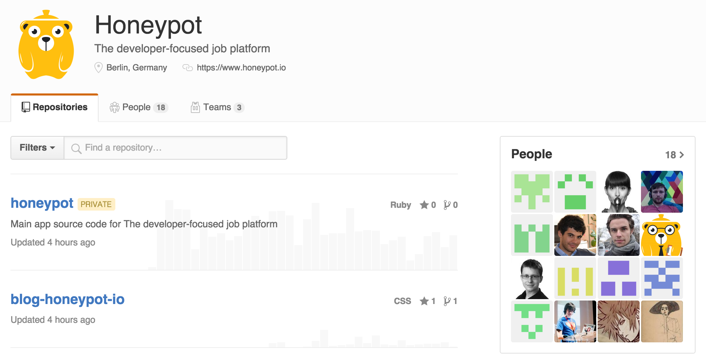
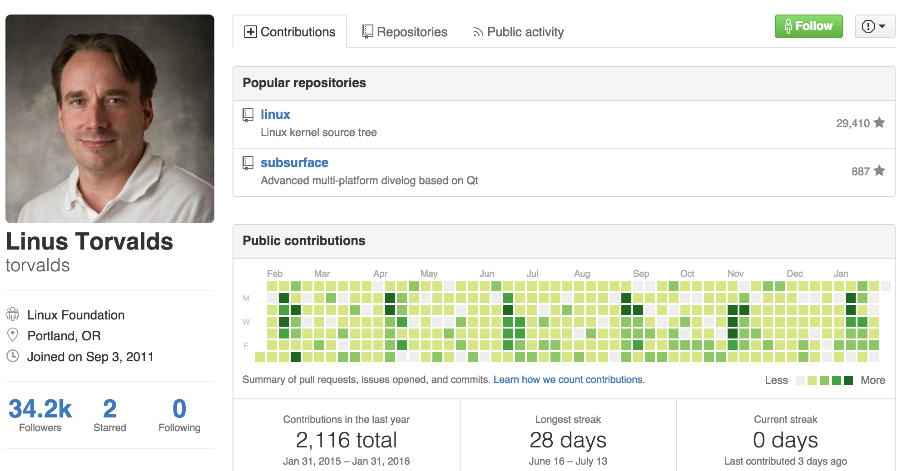
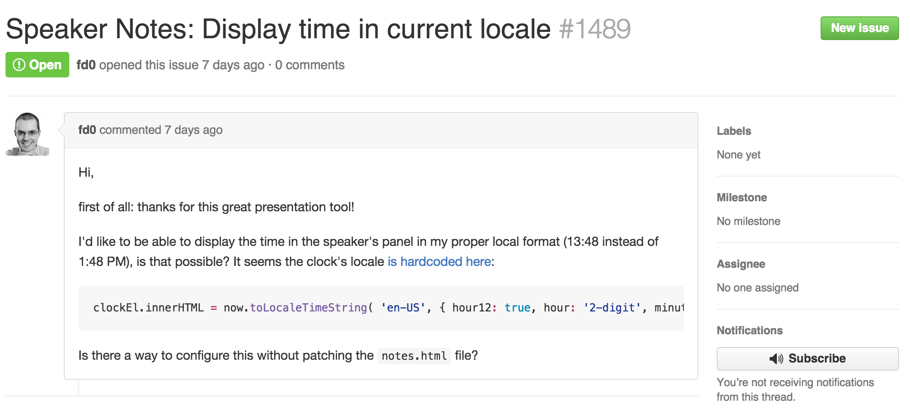
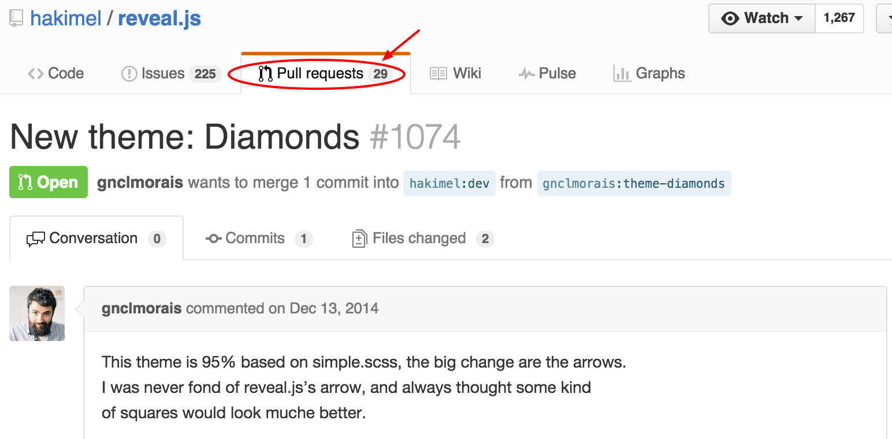
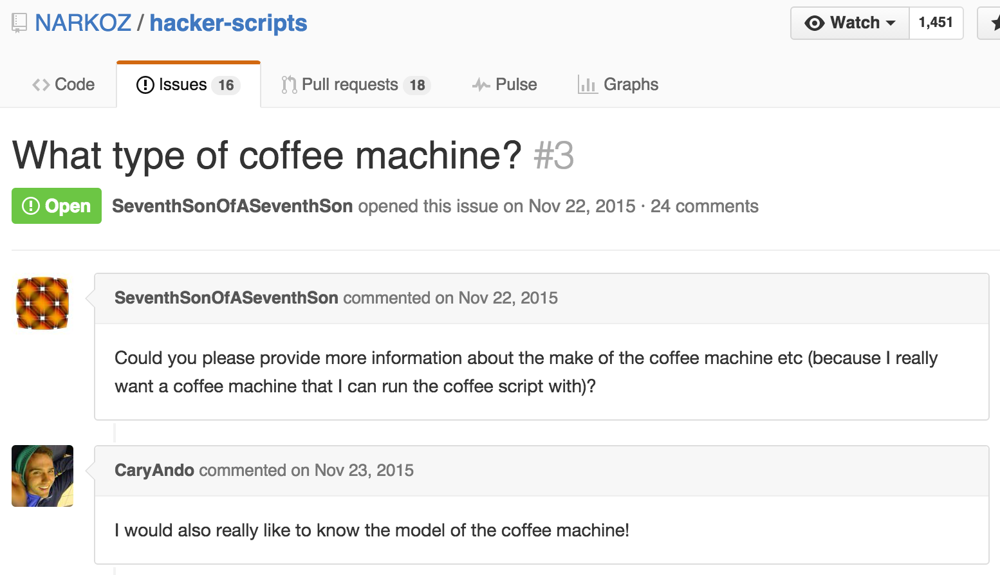
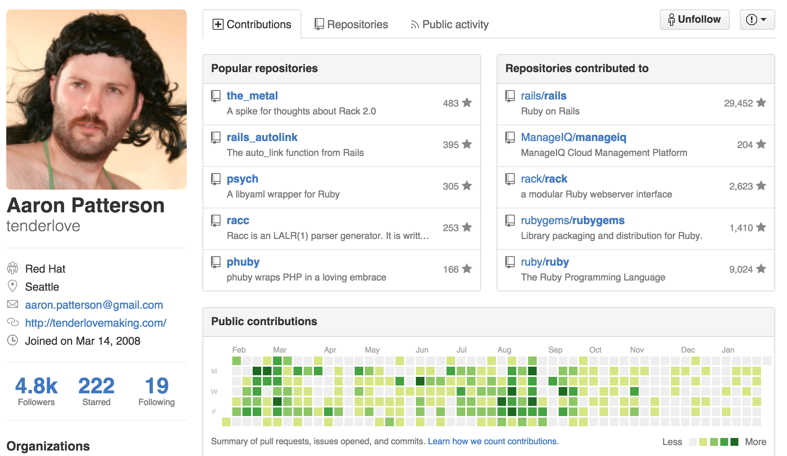
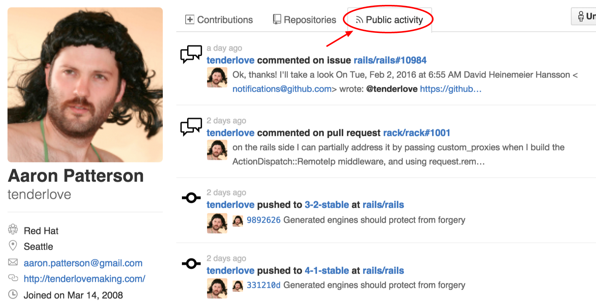
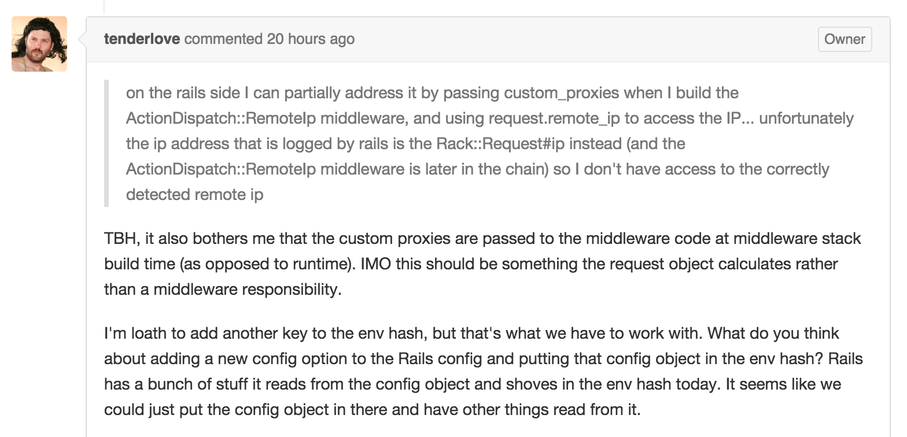
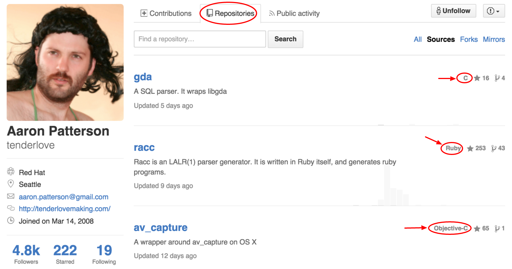
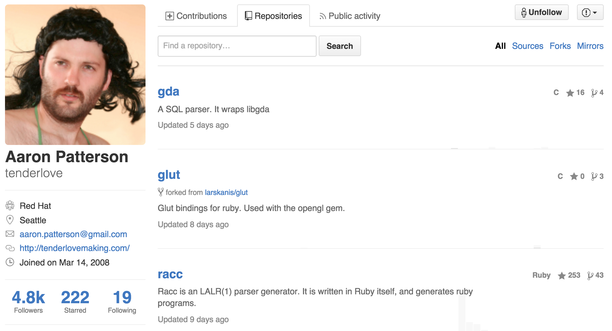

How to use github to evaluate developers
Who am I?
- Timo Rößner
- Berlin, Germany
- Director of Engineering @ Blacklane
- Part of the Reek and RubyCritic core team (hosted @ github)
- Technical advisor for honeypot
So...github?
Who knows github?
Who works with github on a regular base?
How to come across github profiles?
Link in a candidates CV
Link in a honeypot profile
Your CTO says "he looks really good on github!"
Friend-of-a-friend referrals
You google a developer
Ok, so what's github?
github is a code hosting platform
Mostly known for open source software
Open source refers to something that can be modified and shared publicly
Open source software is available for modification or enhancement by anyone
- Operating systems (Android, Linux)
- Programming languages (Ruby, Swift, Java)
- User applications (Firefox, OpenOffice)
github can also host closed-source software
github's bread and butter: users
Users have repositories

reveal.js hosted @ github

Repositories have issues
Users can discuss and contribute via issues
Think of issues as discussion items for
- bugs
- feedback
- suggestions
Report bugs

Request a feature
Update code
Users can suggest changes via pull requests
Think of pull requests as technical term for change request for
- fixing bugs
- adding new features
- changing features
Add a feature
Add a feature (continued)

developers love github because...
github gives them interesting problems

github makes it easy to learn new languages and technologies

github gives them recognition from their peers (e.g. via stars)

github lets them chit chat about technology
So how can I find developers using github?
Well...you can't
github is not a recruiting platform
It doesn't offer any recruiting-related search functionality
But you can use it to evaluate developers!
A github workflow
There is no rule book for this
Everybody, including me, has their own workflow
Measure a candidates activity
On his own projects
But also on other people's projects
In theory activity does not relate to quality at all but experience shows that in practice it often does
A sample profile
Check his social skills via his public activity
Check out how he responds to issues
Check out his repositories
Beware of forks though
Recap
Developers love github
github will not help you to find developers
But it can help you to evaluate them
All github can give you are hints and clues. There are no golden rules
Thank you!
Questions?